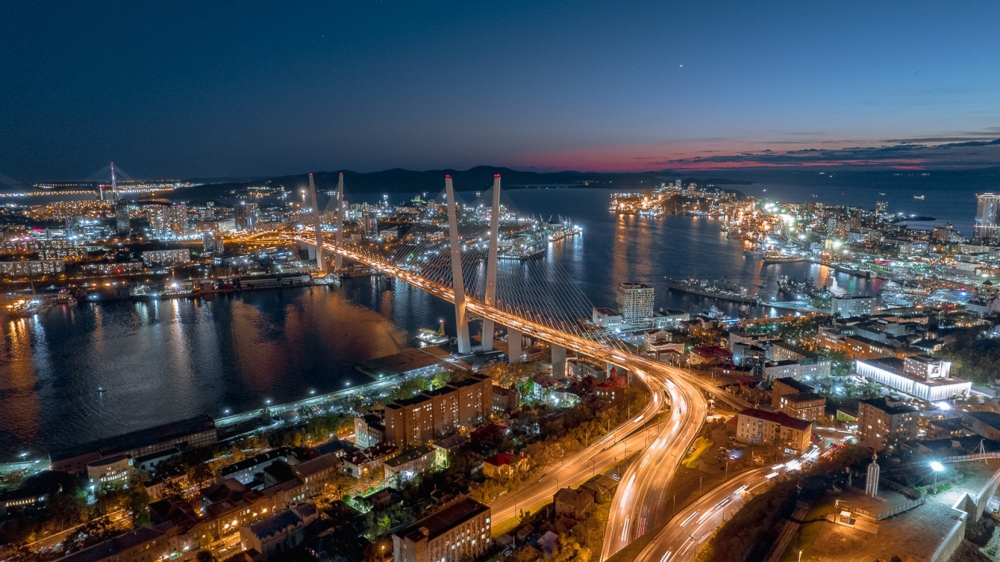

Владивосток в XXI веке
В XXI веке Владивосток сохранил статус важного транспортного, промышленного и торгово-финансового центра. В начале XXI века наметилось улучшение социальной и экономической обстановки. Большое значение для развития города имел проведённый в сентябре 2012 года на Русском острове саммит АТЭС. В ходе саммита прошли встречи глав и представителей экономик более 20 стран Азиатско-Тихоокеанского региона. Основными объектами саммита являются мост через бухту Золотой Рог и мост на Русский остров, а также Дальневосточный федеральный университет.
4 ноября 2010 года Владивостоку присвоено почётное звание «Город воинской славы», в 2012 году рядом с памятником «Борцам за власть Советов на Дальнем Востоке» установлена стела «Город воинской славы».
19 ноября 2020 года в Приморском крае прошёл ледяной дождь, сопровождавшийся сильным ветром, что вызвало массовые отключения электричества и другие повреждения инфраструктуры. Из-за отключений электричества во Владивостоке перестали работать насосные станции, подающие воду и отопление в дома, из-за обледеневших вантов и падающих на дорогу глыб льда закрыли движение по Русскому мосту. 19 ноября во Владивостоке был введён режим чрезвычайной ситуации. Для сохранения сообщения с островом Русский, во Владивостоке впервые с 2012 года возобновили рейсы парома «Босфор Восточный» от причала № 30 до причала на мысе Поспелого на полуострове Сапёрном.